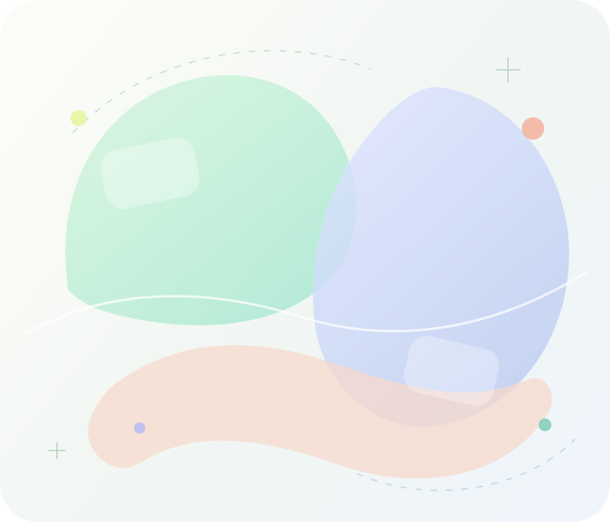
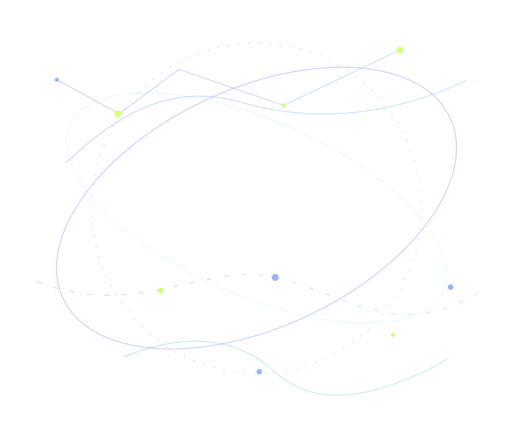
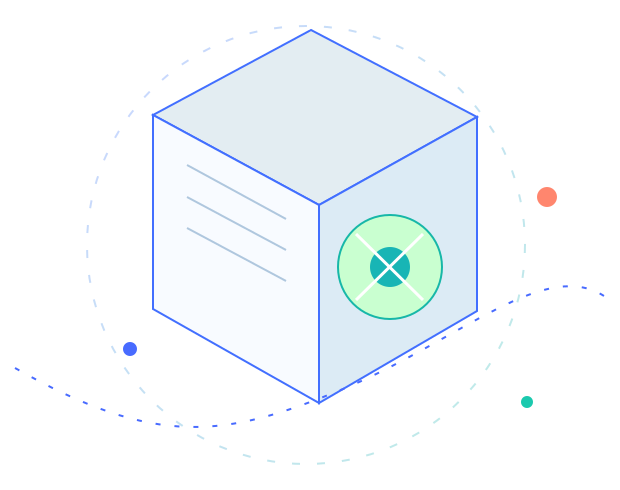

THE NEXT WAY TO BROWSE / 2026
打开未来，
从容浏览。
墨鱼浏览器把工作模式、AI 工具、标签整理与实用入口融合成一个更轻盈、更专注的浏览空间。


01 / AI DISCOVERY
灵感有方向，
探索更自由。
把常用 AI 平台集中在一起。
少一些跳转，多一些思考的时间。
按用途整理 · 随手直达 · 自由选择

AI DISCOVERY04 / PLATFORMS
当前选择 / AI PLATFORM
ChatGPT
对话、写作与代码辅助，让思路从这里开始。
02 / ESSENTIAL TOOLS
小工具，大帮助。
把常用功能留在手边。
要用的时候，刚好就在。

SELECTED TOOL 01 / 04
图片取色
快速识别与复制图像中的颜色，为设计提供更顺手的参考。
03 / WORKSPACE
信息有序，
工作更轻松。
从收藏、标签到工作记录。
一切都有自己的位置。
更专注的体验，从清晰的结构开始。
WORKSPACE / 01
需要的资料，一目了然。
分类管理书签和标签，把每个常用网站都放回合适的位置。
工作资料灵感收藏常用入口
ALL IN ONE PLACE
04 / PERSONALIZED
喜欢的样子，
自己决定。
黑白、清新蓝，或适合夜晚的深色。
你的浏览器，应该顺着你的习惯。
点击上方颜色，实时体验主题效果
MOYU / NEW TAB
每一天，都有新发现。
搜索，或输入网址
AI 平台设计资源常用网站
05 / MOYU FOR ANDROID
把墨鱼，
装进口袋。
更轻快的手机浏览体验，把搜索、标签、工作区与常用工具，整理进更整洁、更顺手的界面里。
底部操作更顺手常用入口更集中
Android 7.0.0 为独立发布版，适用于 Android 9 及以上设备。版本号与 Windows 8.32.0 不同，请以下载页说明为准。
9:41● ︱ ◕
搜索，或输入网址↗
继续浏览
常用网址、标签与工作区都在附近。
AI 入口收藏夹工具箱
✦更整洁的移动首页轻快布局 · 柔和视觉↗
⌂‹◎□☰